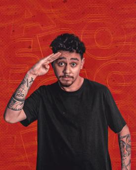
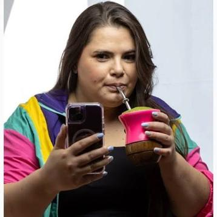

Em 2015, o Pretinho Básico procurou um novo integrante. Em 2026, a busca é ainda maior: encontrar o próximo grande nome da comédia gaúcha — em episódios semanais na ATL TV.
O PB Procura é um projeto multiplataforma criado pelo Pretinho Básico — um dos grupos de humor mais queridos do Rio Grande do Sul — em parceria com a ATL TV. Ao longo da temporada, comediantes disputam a chance de se tornar o novo nome do humor gaúcho, com mídia on air, presença nas redes sociais e nas plataformas digitais da rádio, terminando em uma grande final ao vivo — com plateia, convidados e premiação, tudo registrado pela ATL TV.

Os participantes enviam um vídeo de até 3 minutos: além de se apresentar, precisam fazer os jurados rirem. Integrantes do Pretinho Básico, ao lado de um convidado especial, assistem às produções pré-selecionadas e escolhem os 10 comediantes que avançam — em formato reaction, opinando sobre cada performance.
Os classificados encaram desafios inéditos, escritos sob medida para as habilidades de cada concorrente. A cada episódio, participantes são eliminados até restarem 5 finalistas.
Os 5 finalistas se apresentam ao vivo, num teatro com plateia, convidados especiais e o elenco da Atlântida. O resultado combina voto dos jurados, voto popular e voto do elenco ATL — tudo transmitido ao vivo pela ATL TV.
Mentoria em gerenciamento de carreira, com a Trilha.
Aconselhamento de carreira com integrantes do Pretinho Básico.
Participação nos programas do Grupo RBS.
Abertura de shows de humor de parceiros.
Participação na transmissão do Planeta Atlântida.
Entrevista especial no podcast do Pretinho Básico.
Especial solo na ATL TV, com divulgação nas redes do Pretinho Básico.
Novidades em construção — fique de olho.

O Pretinho Básico sabe como ninguém o que é procurar um novo talento: foi assim que o próprio grupo se formou, em 2015. Agora, ao lado da ATL TV (Rede Atlântida), o PB usa essa experiência para revelar o próximo grande nome da comédia gaúcha — fortalecendo a ATL TV como referência em entretenimento original e gerando conteúdo para streaming e redes sociais.
Não perca nenhum episódio do PB Procura.
Ver grade de exibição